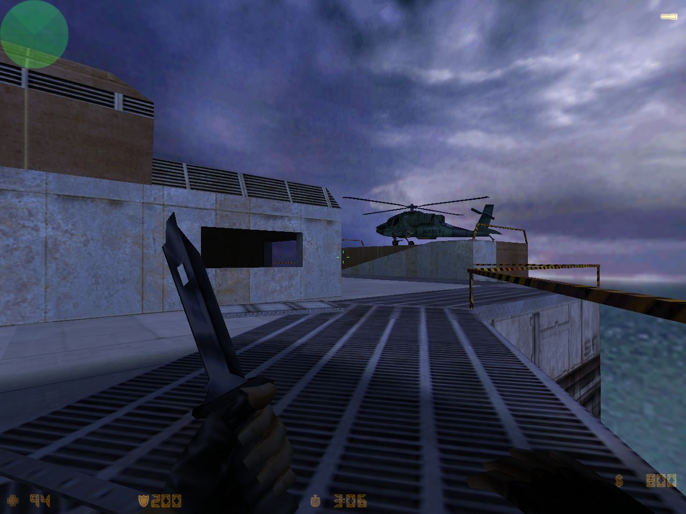

as_oilrig for Counter-Strike by Chris Ashton
Counter-Strike Beta 6.0, released 16 years ago - March 10, 2000
Assassination (as_) maps and Escape (es_) maps were brand new, and of course didn’t last too long in CS.
And look! The original oilrig escape chopper was an Apache!
That wraps up the look at Counter-Strike Beta 6.0 - thanks for watching!